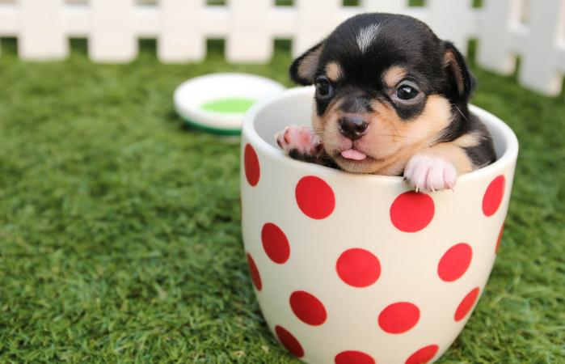

<!DOCTYPE html>
<html>
    <head>
        <title>Week 6: jsPsych basics</title>
        <!-- Load JS psych -->
        <script src="jspsych-7.2/jspsych.js"></script>

        <!-- Load all the plugins we will be using today -->
        <script src="jspsych-7.2/plugin-html-keyboard-response.js"></script>
        <script src="jspsych-7.2/plugin-html-button-response.js"></script>
        <script src="jspsych-7.2/plugin-image-keyboard-response.js"></script>
        <script src="jspsych-7.2/plugin-image-button-response.js"></script>

        <!-- Load jspsych's default CSS -->
        <link href="jspsych-7.2/jspsych.css" rel="stylesheet" type="text/css"></link>

    </head>
    <body>
    </body>
    <script>

// First we have to initialize jsPsych. We can do this using the initJsPsych() function, and saving the result to a variable called jsPsych.

var jsPsych = initJsPsych();

// Define an empty timeline array
var timeline = [];

/*/ Introducing the jsPsych plugin. /*/
// Each variable defines an object that tells jspsych what to render in the browser.

/*/ Define the trial variables /*/

var welcome = {
    type: jsPsychHtmlKeyboardResponse,
    stimulus: 'Welcome to my study! Press enter to begin.',
    choices: ['enter']
};

timeline.push(welcome)

var bubble_tea = {
    type: jsPsychHtmlKeyboardResponse,
    stimulus: '<p style="font-size: 40px">bubble tea</p>',
    choices: ['e', 'i'],
    prompt: "<p>Is this food healthy or unhealthy? Press 'e' for healthy and 'i' for unhealthy.</p>"
};

timeline.push(bubble_tea)

var fixation = {
    type: jsPsychHtmlKeyboardResponse,
    stimulus: '<p style="font-size: 48px;">+</p>',
    choices: 'NO_KEYS',
    trial_duration: 1000,
};

// 1. Can we make the bubble tea text larger?


var bubble_tea_button = {
    type: jsPsychHtmlKeyboardResponse,
    stimulus: '<p>Bubble Tea</p>',
    choices: ['Healthy', 'Unhealthy'],
    prompt: "<p>Is this food healthy or unhealthy?</p>"
};


var puppy = {
    type: jsPsychImageKeyboardResponse,
    stimulus: 'cutepuppy.jpg',
    choices: ['e', 'i'],
    prompt: "<p>Is this dog happy or sad? Press 'e' for happy and 'i' for sad.</p>",
    response_ends_trial: true
};

var puppy_button = {
    type: jsPsychImageButtonResponse,
    stimulus: 'cutepuppy.jpg',
    choices: ['yes','no'],
    prompt: "<p>Is this image cute?",
    trial_duration: 5000
};

// 2. Can we use html-keyboard-response to show the puppy and make it 50% smaller?

var puppy2 = {
  type: jsPsychImageKeyboardResponse,
  stimulus: '',
  prompt: "Press Enter to continue.",
  choices: ['enter']
}


/*/ Run the timeline /*/

jsPsych.run(timeline);

/*/ Homework /*/

// Choose three different plugins from https://www.jspsych.org/plugins/overview/ that we did not cover today and use them to make a mini "experiment"

    </script>
</html>
